- 01 认知：ElasticSearch基础概念.md
- 02 认知：Elastic Stack生态和场景方案.md
- 03 安装：ElasticSearch和Kibana安装.md
- 04 入门：查询和聚合的基础使用.md
- 05 索引：索引管理详解.md
- 06 索引：索引模板(Index Template)详解.md
- 07 查询：DSL查询之复合查询详解.md
- 08 查询：DSL查询之全文搜索详解.md
- 09 查询：DSL查询之Term详解.md
- 10 聚合：聚合查询之Bucket聚合详解.md
- 11 聚合：聚合查询之Metric聚合详解.md
- 12 聚合：聚合查询之Pipline聚合详解.md
- 13 原理：从图解构筑对ES原理的初步认知.md
- 14 原理：ES原理知识点补充和整体结构.md
- 15 原理：ES原理之索引文档流程详解.md
- 16 原理：ES原理之读取文档流程详解.md
- 17 优化：ElasticSearch性能优化详解.md
- 18 大厂实践：腾讯万亿级 Elasticsearch 技术实践.md
- 19 资料：Awesome Elasticsearch.md
- 20 WrapperQuery.md
- 21 备份和迁移.md
02 认知：Elastic Stack生态和场景方案
Elastic Stack生态
Beats + Logstash + ElasticSearch + Kibana
如下是我从官方博客中找到图，这张图展示了ELK生态以及基于ELK的场景（最上方）
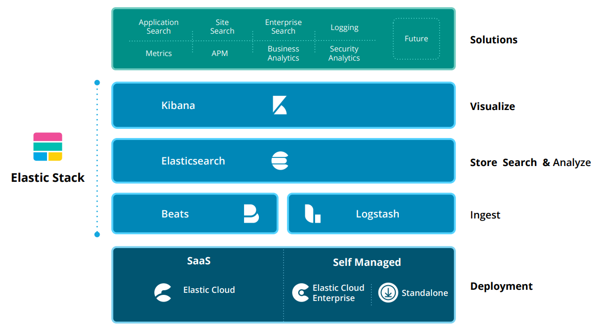
由于Elastic X-Pack是面向收费的，所以我们不妨也把X-Pack放进去，看看哪些是由X-Pack带来的，在阅读官网文档时将方便你甄别重点：
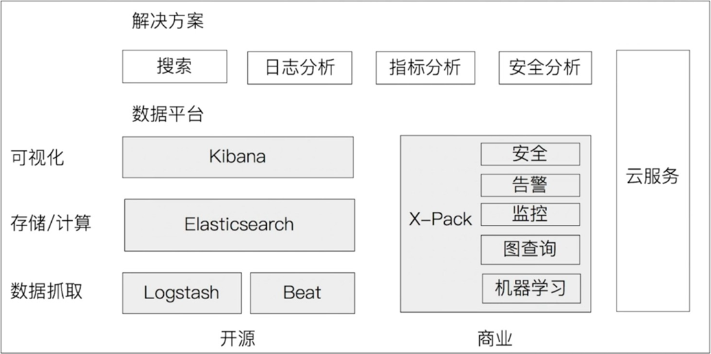
Beats
Beats是一个面向轻量型采集器的平台，这些采集器可以从边缘机器向Logstash、ElasticSearch发送数据，它是由Go语言进行开发的，运行效率方面比较快。从下图中可以看出，不同Beats的套件是针对不同的数据源。
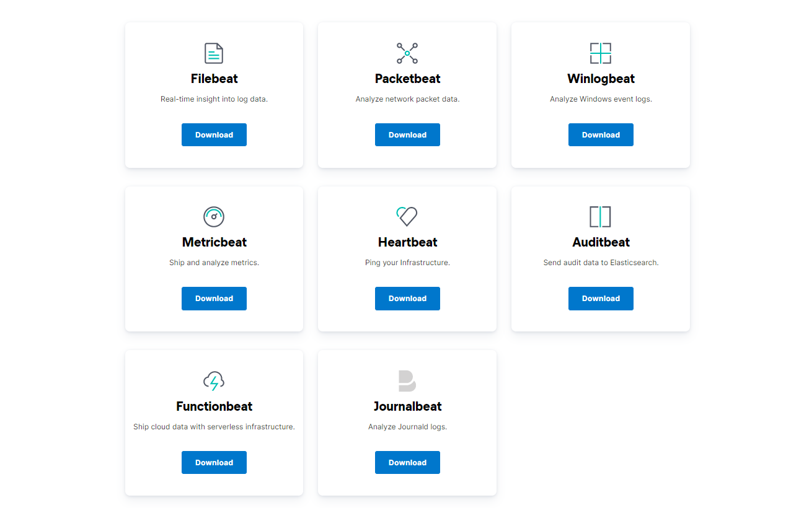
Logstash
Logstash是动态数据收集管道，拥有可扩展的插件生态系统，支持从不同来源采集数据，转换数据，并将数据发送到不同的存储库中。其能够与ElasticSearch产生强大的协同作用，后被Elastic公司在2013年收购。
它具有如下特性：
1）实时解析和转换数据；
2）可扩展，具有200多个插件；
3）可靠性、安全性。Logstash会通过持久化队列来保证至少将运行中的事件送达一次，同时将数据进行传输加密；
4）监控；
ElasticSearch
ElasticSearch对数据进行搜索、分析和存储，其是基于JSON的分布式搜索和分析引擎，专门为实现水平可扩展性、高可靠性和管理便捷性而设计的。
它的实现原理主要分为以下几个步骤：
1）首先用户将数据提交到ElasticSearch数据库中；
2）再通过分词控制器将对应的语句分词；
3）将分词结果及其权重一并存入，以备用户在搜索数据时，根据权重将结果排名和打分，将返回结果呈现给用户；
Kibana
Kibana实现数据可视化，其作用就是在ElasticSearch中进行民航。Kibana能够以图表的形式呈现数据，并且具有可扩展的用户界面，可以全方位的配置和管理ElasticSearch。
Kibana最早的时候是基于Logstash创建的工具，后被Elastic公司在2013年收购。
1）Kibana可以提供各种可视化的图表；
2）可以通过机器学习的技术，对异常情况进行检测，用于提前发现可疑问题；
从日志收集系统看ES Stack的发展
我们看下ELK技术栈的演化，通常体现在日志收集系统中。
一个典型的日志系统包括：
（1）收集：能够采集多种来源的日志数据
（2）传输：能够稳定的把日志数据解析过滤并传输到存储系统
（3）存储：存储日志数据
（4）分析：支持 UI 分析
（5）警告：能够提供错误报告，监控机制
beats+elasticsearch+kibana
Beats采集数据后，存储在ES中，有Kibana可视化的展示。
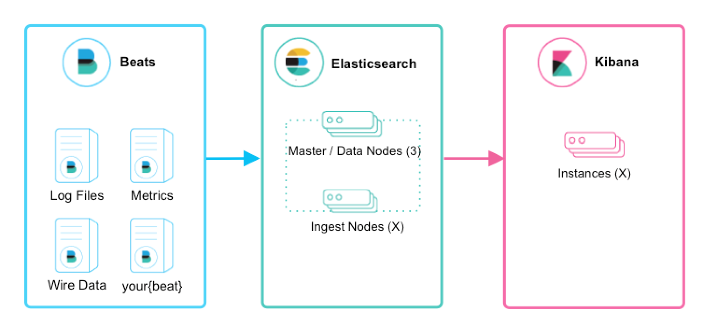
beats+logstath+elasticsearch+kibana
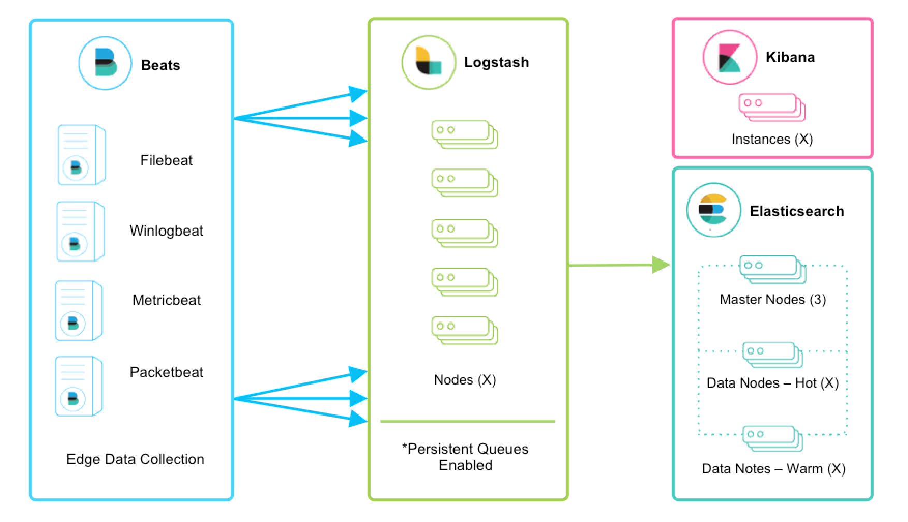
该框架是在上面的框架的基础上引入了logstash，引入logstash带来的好处如下：
（1）Logstash具有基于磁盘的自适应缓冲系统，该系统将吸收传入的吞吐量，从而减轻背压。
（2）从其他数据源（例如数据库，S3或消息传递队列）中提取。
（3）将数据发送到多个目的地，例如S3，HDFS或写入文件。
（4）使用条件数据流逻辑组成更复杂的处理管道。
beats结合logstash带来的优势：
（1）水平可扩展性，高可用性和可变负载处理：beats和logstash可以实现节点之间的负载均衡，多个logstash可以实现logstash的高可用
（2）消息持久性与至少一次交付保证：使用beats或Winlogbeat进行日志收集时，可以保证至少一次交付。从Filebeat或Winlogbeat到Logstash以及从Logstash到Elasticsearch的两种通信协议都是同步的，并且支持确认。Logstash持久队列提供跨节点故障的保护。对于Logstash中的磁盘级弹性，确保磁盘冗余非常重要。
（3）具有身份验证和有线加密的端到端安全传输：从Beats到Logstash以及从 Logstash到Elasticsearch的传输都可以使用加密方式传递 。与Elasticsearch进行通讯时，有很多安全选项，包括基本身份验证，TLS，PKI，LDAP，AD和其他自定义领域
增加更多的数据源 比如：TCP，UDP和HTTP协议是将数据输入Logstash的常用方法
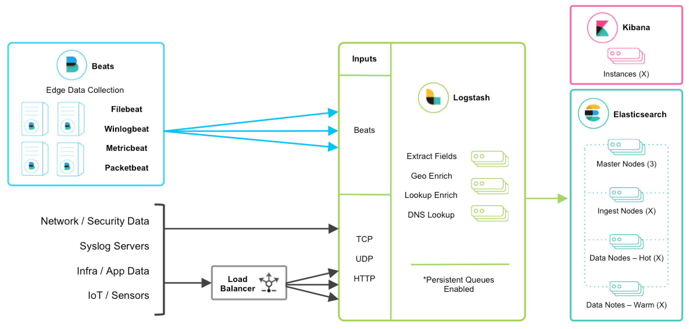
beats+MQ+logstash+elasticsearch+kibana
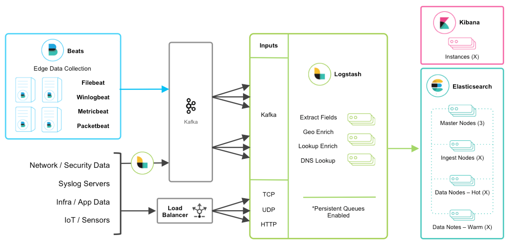
在如上的基础上我们可以在beats和logstash中间添加一些组件redis、kafka、RabbitMQ等，添加中间件将会有如下好处：
（1）降低对日志所在机器的影响，这些机器上一般都部署着反向代理或应用服务，本身负载就很重了，所以尽可能的在这些机器上少做事；
（2）如果有很多台机器需要做日志收集，那么让每台机器都向Elasticsearch持续写入数据，必然会对Elasticsearch造成压力，因此需要对数据进行缓冲，同时，这样的缓冲也可以一定程度的保护数据不丢失；
（3）将日志数据的格式化与处理放到Indexer中统一做，可以在一处修改代码、部署，避免需要到多台机器上去修改配置；
Elastic Stack最佳实践
我们再看下官方开发成员分享的最佳实践。
日志收集系统
（PS：就是我们上面阐述的）
基本的日志系统
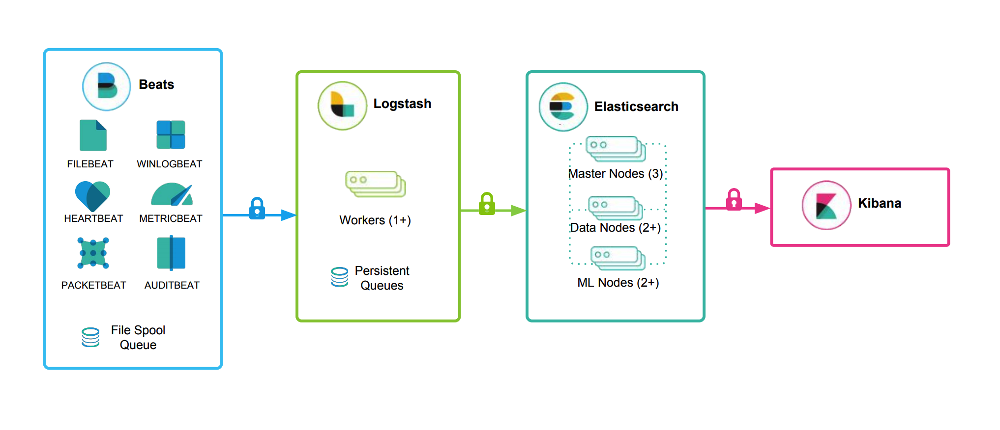
增加数据源，和使用MQ
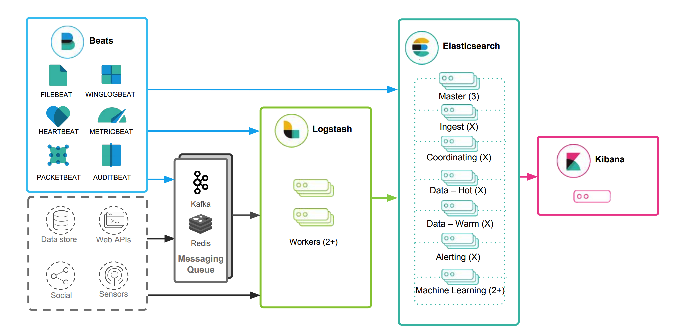
Metric收集和APM性能监控
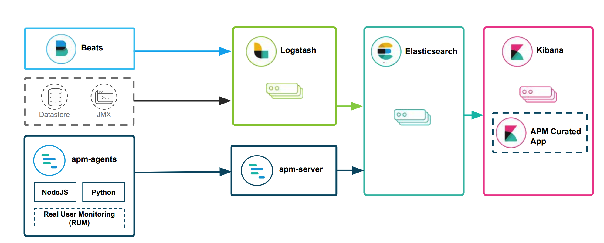
多数据中心方案
通过冗余实现数据高可用
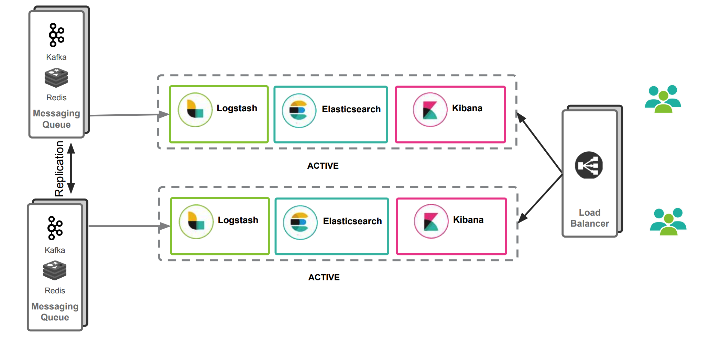
两个数据采集中心（比如采集两个工厂的数据），采集数据后的汇聚
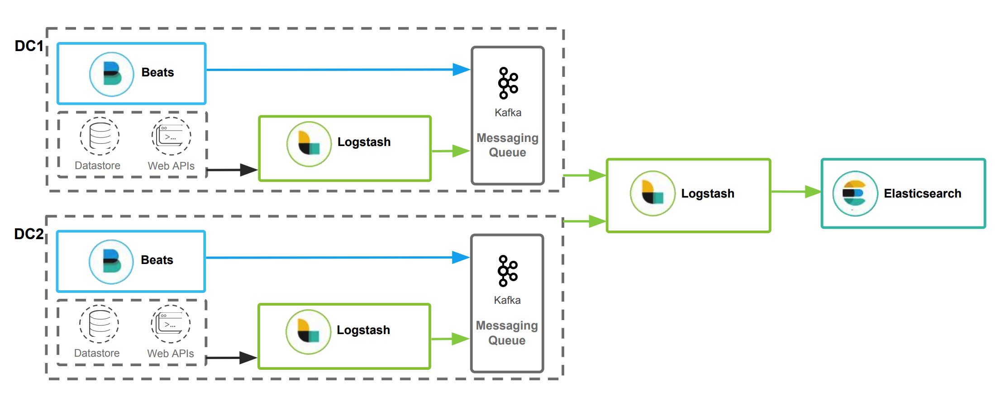
数据分散，跨集群的搜索
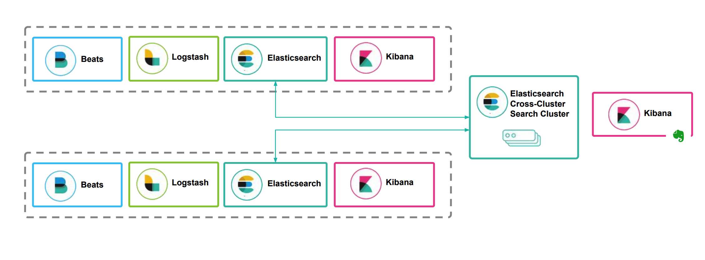
参考文章
© 2019 - 2023 Liangliang Lee. Powered by gin and hexo-theme-book.